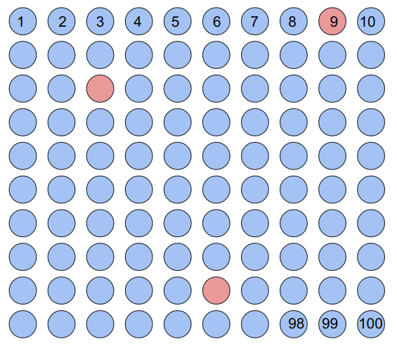
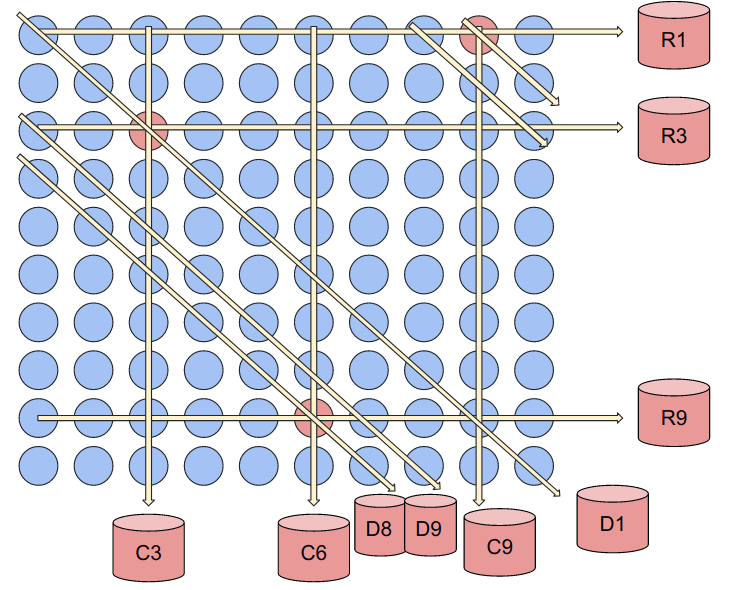
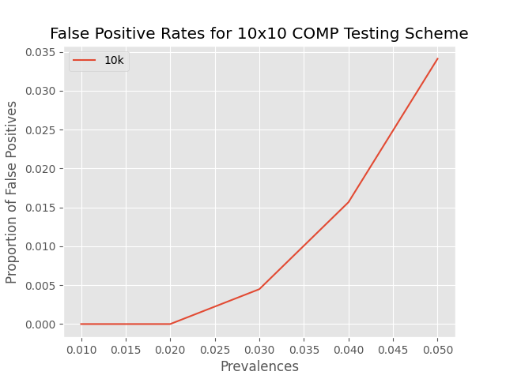

Group testing is a strategy to test a set of samples in a way that eliminates the need to test each individual within the set. This is done by pooling groups of samples and testing those groups in an organized, algorithmic way. The strategy intends to minimize false negatives while reducing the number of tests done on the set. There are two generalized methods for group testing schemes [1]:
We are primarily focused on the Combinatorial Orthogonal Matching Pursuit (COMP) scheme, due to Aldridge et al. [1]. The COMP algorithm identifies defectives in the following steps:
[1] M. Aldridge, O. Johnson, and J. Scarlett, "Group Testing: An Information Theory Perspective," Foundations and Trends in Communications and Information Theory, vol. 15, no. 3-4, p. 196–392, December, 2019. [Online]. Available: https://doi.org/10.1561/0100000099. [Accessed Apr. 19, 2022].
To understand group testing better, let us consider a more specific case: testing for a pathogen in food.
Assume we have 100 samples that we need to test for a certain pathogen (for simplicity, a bacteria: Salmonella Typh.). We could test each of the 100 samples individually, but this approach is costly in terms of both time and money. Another approach could be to "pool" all 100 samples together and test the pool for the pathogen. If the pool tests negative, we would know there is no pathogen in any sample. However, if the pool tests positive, we know at least one of the samples is postive, and would have to re-test the entire batch.
This is a strategy that Robert Dorfman developed during World War II to screen soldiers for Syphilis. It turns out that this approach is quite effective for both a low prevalence and a high sensitivity testing assay. However, this approach requires two "stages" in order to identify the positive individuals in the case where the pool is positive (at least one individual has Syphilis). What if there was a way to identify positive individuals in one testing stage? Let us return to our 100 samples we need to test for presence of Salmonella to explain how this can be done.
To begin, we will take the 100 samples we must test and arrange them in a 10 by 10 square matrix with each sample numbered 1-100. The positive samples are indicated by red shaded circles:
Now, we will "pool" these samples together by taking out some volume from each sample and combining them together in one final volume to be tested. This is done in 3 ways: along the 10 rows, along the 10 columns, and along 10 diagonals (starting from the center and moving right, wrapping across the matrix). We will number each of these tests R1-R10, C1-C10, and D1-D10 for a total of 30 pooled tests. The diagonals are less intuitive to visualize, so consider the below image:
With these three positive samples, we will get the following positive tests as illustrated above: R1, R3, R9, C3, C6, C9, D1, D8, D9
To decode this result, we will use the Combinatorial Orthogonal Matching Pursuit (COMP). Essentially, the algorithm will identify a positive sample at the intersection of three positive tests. So clearly, we correctly identify the postive samples: 9, 23, and 86.
Now, you may notice that there is in fact another intersection of 3 positive tests at sample 89. The COMP algorithm will identify this as a probable defective along with the other (positive) samples. This brings us to one of the fundamental tradeoffs of Group Testing design: scheme complexity (number of tests) vs. specificity.
To model this tradeoff, we can simulate the above scenario many, many, times and randomly "inoculate" a varying number of positive samples to approximate the true specificity of this algorithm. Consider this in the below plot:
This brings us to an interesting observation: for 1 or 2 positive samples, the algorithm's estimate of probable defectives will always align with the number of true postives. In reality, this proves to be quite a bit more tricky for two main reasons: 1) you never know the true prevalence of your set of samples and 2) false negatives due to lab error can occur. However, the behavior of this plot does support the idea that group testing is more efficient than other methods for low prevalances, even if you have to go back and test a few more samples.
For more information on these ideas, you can visit our Github or this page put together by the co-PI of this project, Dr. Krishna Narayanan.